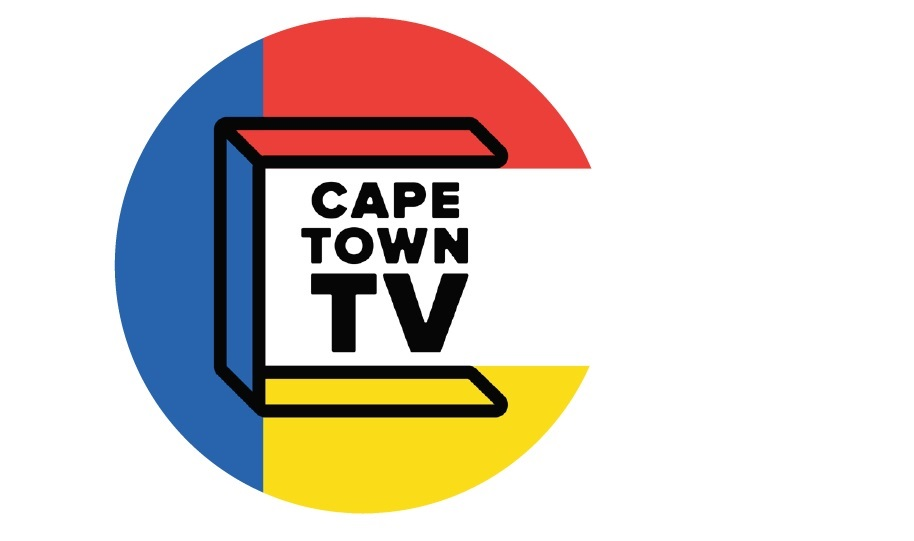
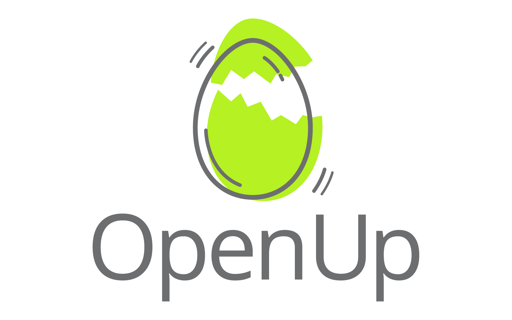
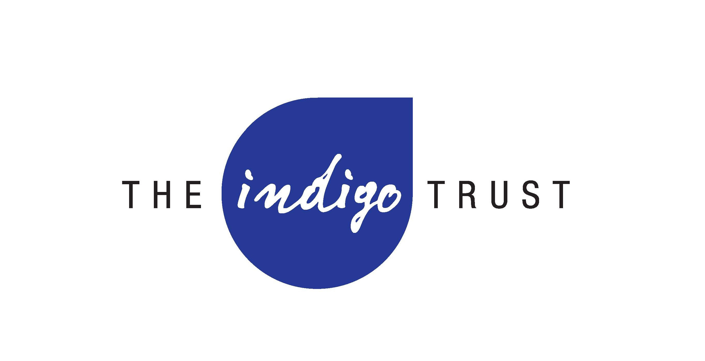

The Show
Democracy in Action is a 13-part TV series which harnesses the reach of television combined with the interactivity of civic technology to create a powerful platform for democracy education, public participation in democratic processes and driving accountability of public officials in South Africa, with specific focus on Cape Town and surrounds.
Over the course of 13 weeks we meet residents of Cape Town who have been experiencing issues and unpack their stories to understand what their rights and responsibilities are and empower them to take action to address these issues. We cover a wide range of topics, from waste removal, social grants, housing evictions to informal trading permits and inclusive education.
Tune in each Tuesday night at 21h00 beginning xxxx on Cape Town TV.
More Details

What's this all about
Together, as residents, we can learn from each other and our collective experiences - underpinned by research via collaborative efforts of NGO domain experts, lawyers, city officials and media partners.
Eget mattis at, laoreet vel et velit aliquam diam ante, aliquet sit amet vulputate. Eget mattis at, laoreet vel velit lorem.
Our Rights
Eget mattis at, laoreet vel et velit aliquam diam ante, aliquet sit amet vulputate. Eget mattis at, laoreet vel velit lorem.
Empowerment Guides
Eget mattis at, laoreet vel et velit aliquam diam ante, aliquet sit amet vulputate. Eget mattis at, laoreet vel velit lorem.
Tempus sed pretium orci
Eget mattis at, laoreet vel et velit aliquam diam ante, aliquet sit amet vulputate. Eget mattis at, laoreet vel velit lorem.
Aliquam consequat et feugiat
Eget mattis at, laoreet vel et velit aliquam diam ante, aliquet sit amet vulputate. Eget mattis at, laoreet vel velit lorem.
Dolore laoreet aliquam mattis
Eget mattis at, laoreet vel et velit aliquam diam ante, aliquet sit amet vulputate. Eget mattis at, laoreet vel velit lorem.
Who's Behind This?
Democracy in action is a collaboration between Cape Town TV and OpenUp and is honoured to be funded by the Indigo Trust. Our approach is to partner with organisations who deeply understand the domain being discussed as well as a bunch of other clever people and organisations.

Cape Town TV
Cape Town TV is aimed at the greater Cape Town metropolitan area, and is committed to providing community access to the powerful medium of television as a tool to promote human rights, social justice and community cultural development.

OpenUp
OpenUp builds tools, opens up data, and provides training that supports active citizenry and helps communities and government work together.

The Indigo Trust
The Indigo Trust funds organisations using digital technologies to improve transparency and accountability in sub-Saharan Africa.